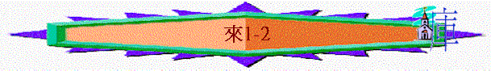

|
超越的信仰 |
||||||
|
認識基督之超越(1-10:18) |
活出信心的表現(10:19-13:25) |
|||||
|
使者 |
首領 |
祭司 |
表現 |
見証 |
路程 |
生活 |
一.認識基督之超越(1:10-18)
1.更美的使者(1-2)
〜1-2題及「天使」「神的使者」「先知」，他們都是神的代言人，奉父神所差遣的，而猶太人很喜歡崇拜天使、先知，但他們卻藐視基督教，沒多題天使的道理，作者藉此書表明基督其實比人間的使者及天上的使者更尊貴，真正要景仰是基督。
A.從使者所講來看----更完全(1:1-2)
a.舊約先知所說的—要多次多方
「神既在古時藉著眾先知多次多方的曉諭列祖。」1:1
〜從前，神藉先知「曉諭」(說話“spoke”)列祖，但舊約的曉諭，是藉眾先知，不是一個人，是很多人，是多次多方，是用不同方法不同次數將真理續漸顯明。
b.神的兒子所講的—一次已完全
「就在這末世藉著他兒子曉諭我們；又早已立他為承受萬有的，也曾藉著他創造諸世界。」1:2
〜神兒子曉諭，藉耶穌一人，一次已完全，不用補充了。
B.從使者身份來看----更尊貴(1:3-2:4)
a.神性的本相
「他是神榮耀所發的光輝，是神本體的真像，常用他權能的命令托住萬有。他洗淨了人的罪，就坐在高天至大者的右邊。」1:3
(1)萬有之主
(A)承受萬有
(B)創造萬有
(C)托住萬有
(2)神的真像
(A)神榮耀所發的光輝
〜人看見光線就知道/看到有光體，人見到主(光輝)，也從主看到榮耀的父神。
(B)神本體的真像
〜「真像」原指一個雕刻的工具，繼而指刻來的印<stamp>，(bears
the very stamp of his nature)印自然就是由原本的模而出，是完全一樣的，神本體的<stamp>也是基督。
〜本體是指實質，實體意思，神的本體與基督也是一樣。
〜而天使卻本不是萬有之主，也不是神的真像，明顯基督的身份比天使更神性。
b.承受的名份
(1)耶穌的名份
(A)父神的肯定
(a)神兒子的名份
「所有的天使，神從來對那一個說，你是我的兒子，我今日生你？又指著那一個說：我要作他的父，他要作我的子？」1:5
〜引用詩2:7，撒下7:14的預表，表明神肯定基督是祂的兒子。
(b)更超然的地位
「再者，神使長子到世上來的時候（或作：神再使長子到世上來的時候），就說：神的使者都要拜他。」1:6
「再者，神使長子到世上來的時候（或作：神再使長子到世上來的時候），就說：神的使者都要拜他。論到使者，又說：神以風為使者，以火焰為僕役；論到子卻說：神啊，你的寶座是永永遠遠的；你的國權是正直的。」1:8-9
「所有的天使，神從來對那一個說：你坐在我的右邊，等我使你仇敵作你的腳凳？」1:13
〜天使也要拜主，而神肯定主勝過其他受造之物，仇敵也要是祂的腳凳，(引用詩97:7，詩45:6,7,賽61:1-3,詩110:1)
(B)歷史的不變
「又說：主啊，你起初立了地的根基；天也是你手所造的。天地都要滅沒，你卻要長存。天地都要像衣服漸漸舊了；你要將天地捲起來，像一件外衣，天地就都改變了。惟有你永不改變；你的年數沒有窮盡。」1:10-12
〜主的身份、地位、主自己也不會受時間、環境、歷史改變，即使天地都要改變，但主的地位仍是不變的。
(2)天使的卑微
(A)只是僕役的靈
「論到使者，又說：神以風為使者，以火焰為僕役；」1:7
〜可以譯神使天使如風，如火焰，即風火都只是受神差遣，只是完成神的工作。
(B)為承受救恩的人效力
「天使豈不都是服役的靈、奉差遣為那將要承受救恩的人效力嗎？」1:14
〜萬事都互相效力，使愛神的人得完全，天使的身份也只是為得救的人效力，令他們得益處。
c.引伸的勸勉
(1)更鄭重的勸勉
「所以，我們當越發鄭重所聽見的道理，恐怕我們隨流失去。」2:1
(2)更鄭重的原因
(A)傳講者的尊貴
〜「所以」是因為之前所說耶穌是神的兒子，天使們講的說話，人也尊敬，更何況是比天使更高地位的基督！豈不更要鄭重！
(B)不鄭重的惡果
(a)隨流失去
(b)更大報應
「那藉著天使所傳的話既是確定的；凡干犯悖逆的都受了該受的報應。我們若忽略這麼大的救恩，怎能逃罪呢？這救恩起先是主親自講的，後來是聽見的人給我們證實了。」2:2-3
(c)所傳的確實
「神又按自己的旨意，用神蹟、奇事和百般的異能，並聖靈的恩賜，同他們作見證。」2:4
C.從使者工作來看----更有效(2:5-18)
a.耶穌是預表中的人子(2:5-9)
「但有人在經上某處證明說：人算什麼，你竟顧念他？世人算什麼，你竟眷顧他？你叫他比天使微小一點（或作：你叫他暫時比天使小），賜他榮耀尊貴為冠冕，並將你手所造的都派他管理，叫萬物都服在他的腳下。既叫萬物都服他，就沒有剩下一樣不服他的。只是如今我們還不見萬物都服他。」2:6-8
〜引自詩8:4-6，此段聖經描述到神顧念人，此「人」此「他」預表誰？
(1)不是指天使
「我們所說將來的世界，神原沒有交給天使管轄。」2:5
∼「他」比天使微小一點，明顯「他」不是指天使，神也沒將世界交與天使管理。
(2)不是完全泛指人類
「叫萬物都服在他的腳下。既叫萬物都服他，就沒有剩下一樣不服他的。只是如今我們還不見萬物都服他。」2:8
〜因為若單指人類，即萬物也應服在人類下(包括仇敵)，但如今仍不見萬物服在人之下，即此「他」可能另有所指。
(3)是預表耶穌成為人子
「惟獨見那成為比天使小一點的耶穌（或作：惟獨見耶穌暫時比天使小）；因為受死的苦，就得了尊貴榮耀為冠冕，叫他因著神的恩，為人人嘗了死味。」2:9
「就是照他在基督身上所運行的大能大力，使他從死裡復活，叫他在天上坐在自己的右邊，遠超過一切執政的、掌權的、有能的、主治的，和一切有名的；不但是今世的，連來世的也都超過了。又將萬有服在他的腳下，使他為教會作萬有之首。」弗1:20-22
〜耶穌卻不同了，祂甘心成為人的樣式，甘願放棄尊貴，暫比天使微小一點，為人苦嘗死味，但神卻將祂升為至高，並賜祂榮耀冠冕，萬有已服在主腳下了！
〜明顯天使不是人，基督耶穌卻是聖經中預表來到世間的人子，而祂為甚麼成為人的樣式？下文有交待。
b.耶穌是更合宜的救主(2:10-18)
(1)父神拯救世人的心意
「原來那為萬物所屬為萬物所本的，要領許多的兒子進榮耀裡去，使救他們的元帥，因受苦難得以完全，本是合宜的。」2:10
〜「那為萬物所屬，為萬物所本的」是指到神，父神的心意是領許多的兒子----祂揀選的子民進榮耀�堙C
〜但如何領他們進榮耀�堙A他們原本是罪人，受罪、受死的轄制，在魔鬼的權勢下，如何拯救他們呢？神藉耶穌成為「救他們的元帥」，使神的兒子們可進榮耀�堙C
〜而耶穌這位元帥所作的比不是人的天使更合宜、更有效！
(2)耶穌更合宜的原因
(A)完全的人子
「原來那為萬物所屬為萬物所本的，要領許多的兒子進榮耀裡去，使救他們的元帥，因受苦難得以完全，本是合宜的。」2:10
〜「因受難得以完全」，耶穌成為人的樣式，祂仍要學習順服，學習受苦(這是在天上與父合一時難學的，因為天上是沒有苦的)，至終祂成功了，可以在逆境中發揮人性最完全的美德----順服至死，默然忍受。
〜人類失敗的原因是不完全、有罪污、不能勝惡，若救我們的元帥也不完全，祂也自身難保，又如何帶我們勝過罪的權勢呢！而天使也不能發揮人性在逆境中完全一面(沒有機會學習、表達，因為天使不需要受苦的)。
(B)與弟兄相同
「因那使人成聖的和那些得以成聖的，都是出於一。所以，他稱他們為弟兄也不以為恥，說：我要將你的名傳與我的弟兄，在會中我要頌揚你；又說：我要倚賴他；又說：看哪，我與神所給我的兒女。」2:11-13
〜那使人成聖的主和我們得以成聖的人，都出於一位父神，舊約聖經也引證，所以彼此也是同一位父，所以主可稱我們為弟兄。
〜主也在肉身上與我們(弟兄)相同，彼此也有血肉之體，所以：
(a)能經歷死亡，也勝過死權
「兒女既同有血肉之體，他也照樣親自成了血肉之體，特要藉著死敗壞那掌死權的，就是魔鬼，並要釋放那些一生因怕死而為奴僕的人。」2:14-15
〜這是天使不能做到的，但主可以，祂要領我們勝過罪與死的權勢，必須成血肉之體，用死承擔我們的罪，也因著神的大能，祂勝過死亡，得以復活，更有能力敗壞那掌死權的魔鬼，使我們從死亡、從罪中得釋放。
(b)能經歷人世，也體恤百姓
「所以，他凡事該與他的弟兄相同，為要在神的事上成為慈悲忠信的大祭司，為百姓的罪獻上挽回祭。」2:17
〜主成為人後，經歷人間憂慮、喜樂，所以祂可以體恤人的情況，成為慈悲忠信的大祭司，代人類將重擔憂患苦況呈獻給神。
(c)能成為人子，也為人代罪
〜人的錯，要人自己承擔，主既為人，就代表人成為挽回祭，承擔人的罪。
(d)既然被試探，也能拯救人
「他自己既然被試探而受苦，就能搭救被試探的人。」2:18